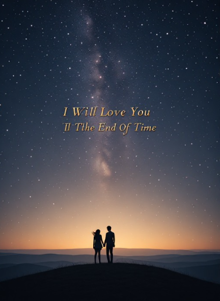

A song about a love that refuses to be limited by time — choosing someone through every season, every storm and every change that life can bring.
When the daylight breaks across your face,
and the world begins to shine,
I feel the quiet truth of us
a love that outlives time.
Every heartbeat finds your name,
like a promise soft and true;
in every sunrise, every breath,
I find my way to you.
Seasons change and rivers bend,
but my heart won’t shift or sway
you’re the one I choose again,
every single day.
And I will love you till the end of time,
through every mountain we must climb.
When the stars fall out and the sun won’t shine,
I’ll still be yours and you’ll still be mine.
Nothing in this world could ever rewrite
what’s written in the soul of you and I
I will love you till the end of time.
When shadows stretch across the earth
and the nights grow long and cold,
I’ll wrap you in the warmth we’ve built
a story love foretold.
I’ve walked this life with open hands,
but you’re the gift I hold the tightest;
you turned my doubt to steady hope,
my darkest hours to brightness.
And even when the years grow old
and silver threads your hair,
I’ll trace each line with gentle hands
and whisper I’ll be there.
And I will love you till the end of time,
through every mountain we must climb.
When the stars fall out and the sun won’t shine,
I’ll still be yours and you’ll still be mine.
Nothing in this world could ever rewrite
what’s written in the soul of you and I
I will love you till the end of time.
If storms come crashing in,
if the world forgets our names,
I’ll hold you through the thunder,
through the joy and through the pain.
For every moment left to live,
for every heartbeat in this life
I’m yours until the end,
and far beyond the night.
I will love you till the end of time,
past every star, beyond the sky.
If forever has a longer line,
I’ll chase it just to keep you mine.
Even when the universe rewinds,
I’ll find you again in another life
I will love you till the end of time.